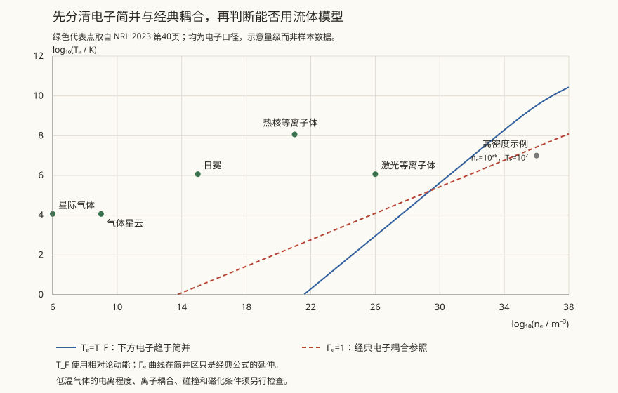

本页目录
等离子体 · 磁流体与聚变
对标：Chen《Introduction to Plasma Physics》/ Freidberg《Ideal MHD》/ Kulsrud ｜ 前置：fl-01、em-02（Maxwell）、sm-02 宇宙中绝大部分重子物质处于等离子体态——恒星、星际介质、吸积盘、日冕，以及地面上的聚变装置。本页把 N–S 与 Maxwell 缝在一起，给出磁流体（MHD）方程，并说明为什么"磁冻结"这一条几乎解释了等离子体的全部奇特行为。

学习层：先预测，磁场是被搬运还是被抹平？
1. 先过预测门：只给一个周期 Fourier 模态
本实验先不解一般三维 PDE，而是固定周期区间 \(0\le x<L\)、常数速度 \(U\) 和磁扩散率 \(\eta\)，从
出发。初态取单一模态 \(B_y(x,0)=B_0\cos(q_nx+\phi)\)，其中 \(q_n=2\pi n/L\)。先不要打开实验台，预测四件可判决的事：
- 理想冻结 \(\eta=0\) 时，模态的幅度会不会衰减？波峰向哪边移动？
- 在同一个 \(\eta,t\) 下，把波数 \(n\) 加倍，幅度衰减率会变成几倍？
- 纯扩散 \(U=0,\eta>0\) 时，图形还会不会平移？
- 磁能量 \(E_B\) 的比值应当服从 \(e^{-\eta q_n^2t}\)，还是 \(e^{-2\eta q_n^2t}\)？
2. 固定模型：用 Fourier 模态的解析推进
实验台只推进这一模态的闭式解
并把 \(\eta=0\) 解释为理想极限（\(\mathrm{Rm}=\infty\)，若 \(U\ne0\)）。两个宏观时间尺度是
这里的数值推进不是手写显式 PDE 时间步，而是直接乘上每个 Fourier 模态的相位因子与衰减因子，所以不会把 CFL 误差或人工能量增长混进物理解读。
无 JavaScript 时的静态读法：对一个模态，振幅因子是 \(A(t)/A(0)=e^{-\eta q_n^2t}\)，磁能量密度在一个周期上的平均值取
并满足周期边界下的能量账本
| 情形 | 选择 | 解析检查 |
|---|---|---|
| 理想冻结 | \(\eta=0,\ U>0\) | 振幅与磁能量不变，只发生平移 |
| 有限电阻 | \(\eta>0,\ U>0\) | 平移与扩散同时发生，\(\mathrm{Rm}\) 有限 |
| 纯扩散 | \(U=0,\ \eta>0\) | 没有平移，振幅与磁能量按指数衰减 |
| 高波数 | \(n\) 较大 | 振幅衰减率 \(\eta q_n^2\) 按 \(n^2\) 增大，能量衰减率再多一个因子 2 |
实验台解锁后，先选预设，再改变 \(U,\eta,n,t\)，最后用固定的 \(0,t/4,t/2,3t/4,t\) 账本核对解析式。图内标签使用英文，正文解释仍以中文为主。
预测门答案：\(\eta=0\) 只平移不衰减；\(n\) 加倍使振幅衰减率变为 4 倍；\(U=0\) 时只有扩散没有平移；磁能量比值是 \(e^{-2\eta q_n^2t}\)。
3. 适用域与不能推出的结论
这是一维、周期、常系数、给定速度场、单模态的感应方程 toy。它可以把平流时间尺度、磁扩散时间尺度和单模态磁能量账本放在同一张图上；它不能模拟磁重联、Hall/动理学尺度、激波、聚变约束或一般三维发电机，也不能把一维磁能衰减直接当成完整等离子体的总能量演化。完整 MHD 中速度会受磁场反馈，电阻耗散还要与内能和状态方程一起记账。
1. 什么算等离子体：三个判据
① 集体性主导：Debye 屏蔽长度
电荷在 \(\lambda_D\) 之外被屏蔽（与 cm-01 的 Thomas–Fermi 屏蔽同源）。要求 \(\lambda_D\ll L\)。
② 多粒子屏蔽：Debye 球内粒子数 \(N_D = n\lambda_D^3\gg1\)（否则是"强耦合等离子体"，需另做处理）。
③ 电磁主导碰撞：等离子体频率 \(\omega_p=\sqrt{ne^2/\varepsilon_0 m}\) 远大于碰撞频率。
\(\omega_p\) 的物理后果：频率低于 \(\omega_p\) 的电磁波无法传播（被反射）。这就是电离层反射短波无线电的原理，也是激光等离子体相互作用的临界密度判据。
2. 单粒子图像：回旋与漂移
磁场中带电粒子作回旋运动，\(\omega_c = qB/m\)，Larmor 半径 \(r_L = v_\perp/\omega_c\)。
绝热不变量 \(\mu = mv_\perp^2/2B\) 在缓变场中守恒 → 粒子进入强场区时 \(v_\perp\) 增大、\(v_\parallel\) 减小，可能被磁镜反射。
这直接解释了范艾伦辐射带：地磁场两极强、赤道弱，形成天然磁镜，把高能粒子囚禁其中。
各种漂移：\(\mathbf E\times\mathbf B\) 漂移（与电荷符号无关，故不产生电流）、梯度漂移、曲率漂移（与符号有关，产生环电流）。
3. 磁流体（MHD）方程
3.1 完整的最简闭合系统
把等离子体当作单一导电流体，联立 Navier–Stokes 与 Maxwell（略去位移电流）。在无外力、黏性和热传导的最简电阻 MHD 中，质量、动量、感应、磁场约束和总能量方程可写成
欧姆定律是 \(\mathbf E+\mathbf u\times\mathbf B=\eta_\Omega\mathbf J\)，其中 \(\eta_\Omega=1/\sigma=\mu_0\eta_m\)。当 \(\eta_m\) 为常数且满足 \(\nabla\cdot\mathbf B=0\) 时，感应方程化为
总能量与状态方程闭合为
最后一式取的是无外力、无黏性/热传导的总能量守恒形式；电阻造成的 Joule 加热在总能量中与磁能损失相抵。若恢复黏性、热传导或外力，必须把相应的应力、热流和功率项一起加入，不能只给动量方程添一项而仍称系统闭合。
本页实验只抽取上面感应方程的一维分量：令 \(\mathbf u=U\hat{\mathbf x}\)、\(\mathbf B=B_y(x,t)\hat{\mathbf y}\)，并把 \(U\) 当作不受磁场反馈的给定常数，就得到学习层中的 advection–diffusion toy。由于 \(B_y\) 不依赖 \(y\)，此 ansatz 自动满足 \(\nabla\cdot\mathbf B=0\)；它没有求解质量、动量和总能量方程。
磁雷诺数 \(\mathrm{Rm}=|U|L/\eta_m\) 度量给定长度尺度上平流与磁扩散的相对强弱。若 \(U=\eta_m=0\)，这个比值是 \(0/0\)，不定义；若 \(U\ne0,\eta_m=0\)，才写作理想极限 \(\mathrm{Rm}=\infty\)。天体大尺度上的 \(\mathrm{Rm}\) 往往很大，但薄电流片的局部长度尺度更小，局部扩散仍可能重要。
Alfvén 冻结定理【推导】：在理想 MHD、足够光滑的速度/磁场和随流体运动的闭合曲面条件下，穿过物质曲面的磁通守恒。把它简写成“磁力线随流体运动”很直观，但磁力线是瞬时几何表示，不是有编号的物质细线；大尺度 \(\mathrm{Rm}\gg1\) 也不排除奇异层、Hall 或动理学尺度破坏理想近似。
这条约束连接了许多宏观现象：
- 流体运动拉伸、缠绕、放大磁场 → 发电机机制（地磁场、太阳磁场的起源）；
- 磁场反过来通过 \(\mathbf J\times\mathbf B\) 约束流体 → 磁约束聚变的基本思想；
- 跨磁场运动受到强约束，而沿场运动仍可发生 → 许多日冕结构会沿磁场方向组织；“贴在线上”只是理想 MHD 的几何比喻。
磁压与磁张力：\(\mathbf J\times\mathbf B = -\nabla\left(\dfrac{B^2}{2\mu_0}\right)+\dfrac{(\mathbf B\cdot\nabla)\mathbf B}{\mu_0}\)——磁场像有压强与沿线张力的弹性介质。由此得 Alfvén 波（磁力线的横波）：
等离子体 \(\beta = p/(B^2/2\mu_0)\) 判断谁主导：\(\beta\ll1\) 磁场主导（日冕），\(\beta\gg1\) 流体主导（恒星内部）。
4. 磁重联：冻结定理的破缺
冻结定理禁止磁拓扑改变——但太阳耀斑在几分钟内释放巨量磁能，必须改变拓扑。
磁重联：在薄电流片中，非理想电场、有限电阻、Hall 或动理学效应使理想冻结条件失效；场线连通关系改变，磁能可转为动能、热能和粒子非热能量。
- Sweet–Parker 模型在经典均匀电阻、稳态二维层流假设下给出速率 \(\propto\mathrm{Rm}^{-1/2}\)；对许多高 \(\mathrm{Rm}\) 的爆发现象，它通常慢于所需时标；
- 快速重联（Petschek、湍流重联、无碰撞效应）是活跃研究方向【前沿/未完全解决】。
重联是空间与聚变等离子体中的核心过程之一：它参与太阳耀斑、日冕物质抛射、地磁亚暴和托卡马克锯齿崩塌，但每类事件还受全局驱动、边界条件、湍流与粒子动力学共同控制。
5. 聚变约束
Lawson 判据：点火要求三乘积
两条路线：
- 磁约束（托卡马克）：\(\beta\) 低、\(\tau_E\) 长（秒级）、\(n\) 低。核心难题是输运反常（远大于经典预言，由微观湍流驱动）与不稳定性（撕裂模、边界局域模）；
- 惯性约束：\(n\) 极高、\(\tau_E\) 极短（纳秒）。核心难题是压缩对称性与 Rayleigh–Taylor 不稳定性（fl-04）。
共同的物理障碍是不稳定性与湍流输运——这正是本线前几页内容在聚变工程中的汇合点。
6. 练习与要点
例 1（日冕为何百万度） 日冕温度比光球（约 5800 K）高两个数量级。主流解释指向磁能耗散（波加热与纳耀斑重联）——"加热问题"至今未完全定论【争】，是空间物理的经典难题。
例 2（冻结的量级） 太阳对流区 \(\mathrm{Rm}\sim10^{9}\)；实验室等离子体 \(\mathrm{Rm}\sim10^2\)–\(10^4\)。天体等离子体几乎完美冻结，实验室则不然——这使实验室复现天体过程极其困难。
例 3（Alfvén 速度） 日冕 \(B\sim10\) G、\(n\sim10^{15}\ \mathrm{m^{-3}}\)：\(v_A\sim10^3\) km/s——耀斑扰动以此速度传播，与观测的爆发时标一致。\(\blacksquare\)
流体线到此结束：从连续介质假设，到边界层、湍流、失稳、混沌，再到等离子体。下一线转向天体——把这些物理用到恒星与星系上。